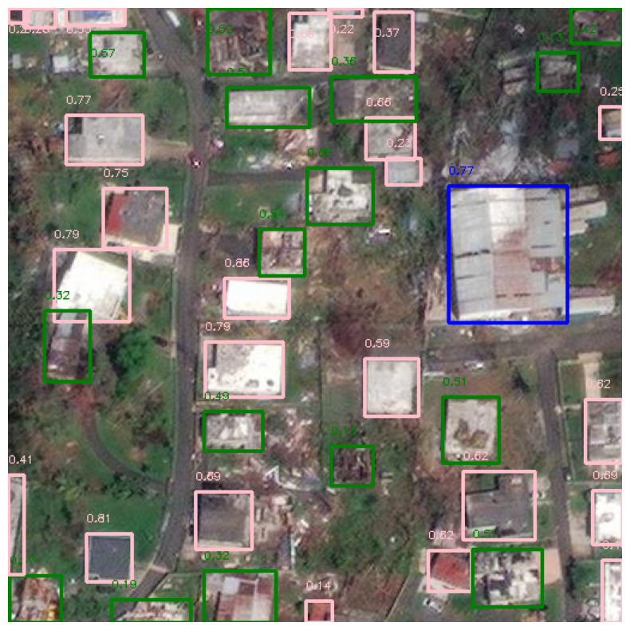
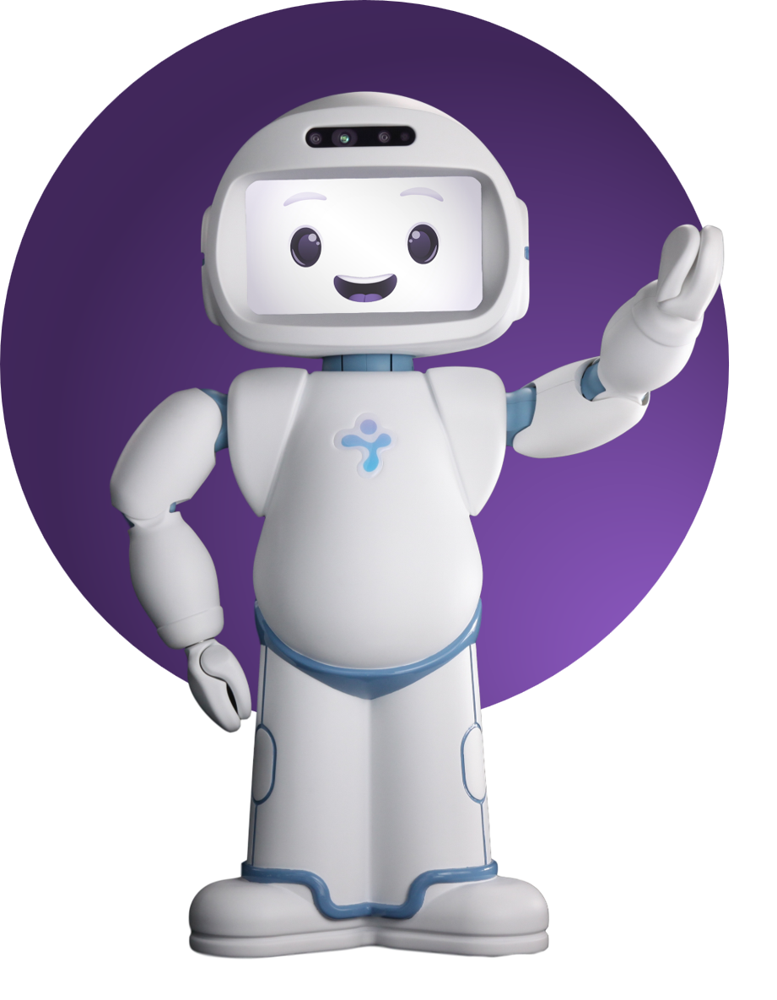

IMT Atlantique Engineering Graduate, Specializing in Data Science, Software Development, and AI for Real-World Applications.
Download My CV
Data Scientist at Generali - 6 months internship
I am part of the DataLab team at Generali, and my internship focuses on detecting fraud in insurance disability contracts. It is important to note that the fraud rate in insurance is estimated to be over 2%. My objective is to optimize the detection of these fraud cases and maximize Generali's savings on fraudulent claims. My tasks during this internship include:
The main technical tools used during my internship include Python, Spark, GitLab, Hadoop, Trello, and Airflow.
AI Researcher - 5 months internship
I completed my internship at CNRS in Montpellier, on a project titled "There is no intelligence yet". The goal was to study the intelligence of current AI models. I worked on the challenge ARCathon, considered by François Chollet as a benchmark to measure the intelligence of a computational system.
Currently, no AI system has been able to solve more than 30% of the tasks proposed by this challenge, whereas a human can easily solve over 90%.
During this internship, my tasks were:
This work aimed to develop more effective solutions and push the boundaries of artificial intelligence by demonstrating both the capabilities and limitations of current AI models. My experience during this internship allowed me to contribute to cutting-edge research and gain a deep understanding of the challenges related to artificial intelligence (internship report).
Diplôme d'Ingénieur - IMT Atlantique
Preparatory classes for Engineering schools - Al Zahrawi

February - March 2024 Computer Vision, Business Intelligence
The challenge involved detecting and classifying damaged and undamaged buildings from post-event imagery to improve disaster management systems. Using a two-stage predictive framework, the process began with detecting buildings using a modified YOLOv8 model for precise bounding and polygon proposals. The second stage focused on classifying buildings into categories (damaged, undamaged, commercial, or residential) using hybrid methods that combined unsupervised techniques, external datasets, and machine learning classifiers. I participated in this challenge as part of a two-person team. Our final performance ranked Top 8 out of 11 000 participants worldwide, achieving an impressive score of 44 mAP. By leveraging techniques such as QGIS analysis, targeted resampling, and advanced data augmentation, our approach significantly improved classification accuracy, particularly for minority classes like commercial and damaged buildings, contributing to more efficient disaster response and recovery.
February - March 2023 Time series analysis, Business Intelligence
This challenge focused on classifying and monitoring rice crop fields in Vietnam using satellite data and machine learning techniques. The goal was to develop a robust and reliable model capable of accurately identifying rice fields from data provided by Sentinel-1, Sentinel-2, Landsat, and MODIS satellites. The model leveraged Gated Recurrent Units (GRUs) for encoding temporal data and an Artificial Neural Network (ANN) for classification, ensuring high accuracy even in the presence of data gaps or cloud cover. I participated in this challenge as part of a two-person team. Our efforts led us to qualify for the National Final in France, where we achieved 1st place. The project demonstrated the potential of satellite data and machine learning to enhance agricultural practices, improve food security, and support environmental sustainability. Through our innovative approach and rigorous evaluation methods, we showcased the ability to extract valuable insights from satellite imagery, contributing to the advancement of precision farming and resource management.
February - March 2024 Data Analysis, Natural Language Processing
The Curiosity Cup 2024 was a global competition organized by SAS®, focusing on developing innovative solutions to classify emails as legitimate (Ham), unwanted (Spam), or fraudulent (Phishing). The challenge highlighted the increasing importance of email security, given the financial and cybersecurity risks posed by phishing attempts. Our team of three, DataTitans, tackled this supervised classification problem using Natural Language Processing (NLP) techniques and machine learning models. Leveraging SAS Viya and Python, we employed iterative methodologies, including:

February - June 2021 Software Developement, Human detection with AI
QTrobot, developed by LuxAI S.A., is a humanoid robot used in applications such as emotional training for children with autism, post-stroke rehabilitation, and cognitive and physical rehabilitation for the elderly. In this project, we aimed to make QTrobot's behavior more natural and engaging by enhancing its interactive capabilities and reducing its robotic demeanor. I collaborated with a team of three to design a series of behaviors that make the robot appear more sociable and lively, even when idle. Key features developed include: Random Movements: The robot moves its head and arms slightly, mimicking a standing person looking around, to give a more natural appearance. User Following: Using its built-in NuiTrack camera, the robot can track and follow a user's face, with its head motors (HeadYaw and HeadPitch) adjusting to the user's position. Interactive Greetings: Scripts enable the robot to recognize and respond to gestures such as waving, swipe-up greetings, and the Namasté gesture, making interactions more dynamic and culturally inclusive. Integrated Behavior: All functions were combined in a single script to showcase the robot's full interactive capabilities in a cohesive scenario. The entire project was implemented using Python and ROS (Robot Operating System). A demonstration of the robot's behavior is available on YouTube. This work emphasizes the potential of robotics to create more human-like and engaging interactions, contributing to improved user experiences in therapeutic and educational settings.